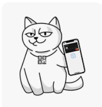

Welcome to Mono_test_webhook’s!

- Author:
Pani Anastasia
- Revision:
03
Attention
Be careful
Check out the Usage section for further information, including how to install the project.
This module for test. Use documentation Acquiring (v2311) and offers handling webhooks Monobanks
Note
This project is for test before implements
Note
This is my note.
Note
This is my note.
Перегляньте це, зображення!